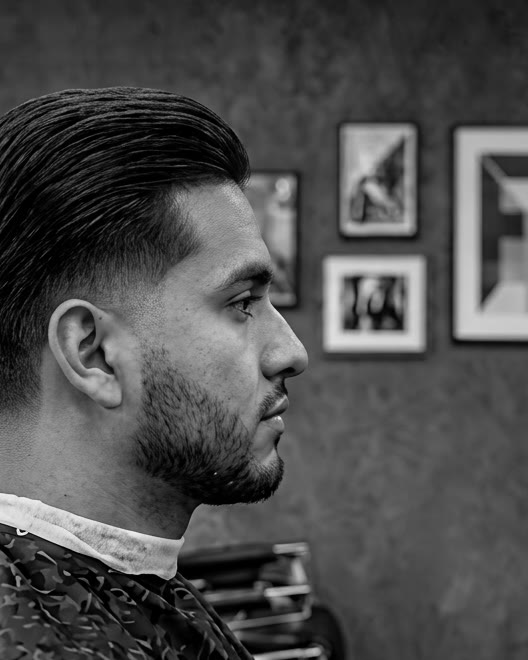
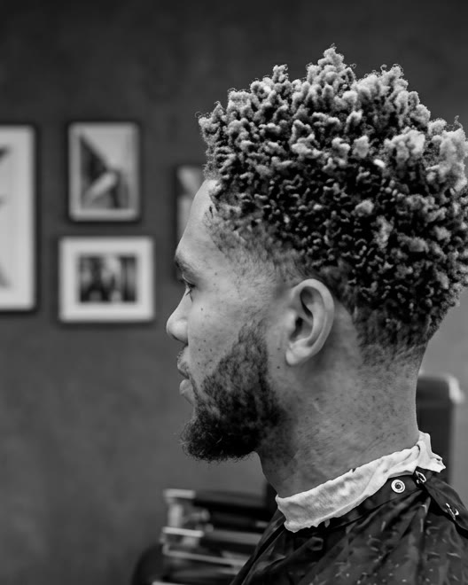

I’m Onyx — I cut fades like a discipline, built to the shape of your head. Bring a photo of the cut you want; I’ll tell you exactly how we get there, then get you there.
Seen a cut you want? Show me in the chair or send it ahead — I’ll tell you how it’ll sit with your hair and head shape, then build it step by step. No guesswork, no “close enough.”
Book a chair

I’m Onyx — I cut out of Foundry Barbershop, downtown. I treat the fade as something to study, not just do: how each guard length reads as a shadow, how the blend bends around the skull, why a cut grows out clean instead of patchy. Show me the cut you want and I’ll show you how we get there.
A clean fade looks effortless. It isn’t. When you bring me a photo, this is the thinking that gets you there — and why it grows out right.
It’s built, not buzzed. The fade climbs through guard sizes one step at a time — a #0.5 at the nape up through the crown — every pass overlapping the last. No jumps, no lines.
The gradient lives in the transitions. Each pass feathers into the one beneath it, so a change in length reads as a shadow — never a step.
That seamless taper is a flick of the wrist at the end of every stroke — the one move that separates a clean fade from a patchy one.
Then it’s clipper-over-comb around the ears, the neckline, and where the fade meets the length on top — precision exactly where the eye lands.
A fade follows the skull, not a straight line. The occipital bone at the base and the parietal ridge at the widest point decide where the blend bends — a drop fade dips behind the ear for exactly that reason. The cut respects the shape of your head.